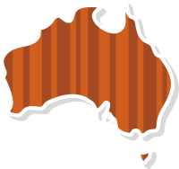
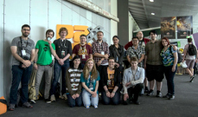
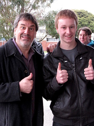
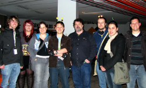
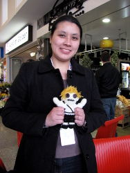
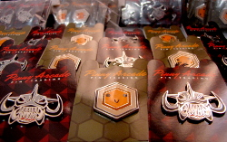
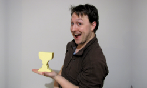
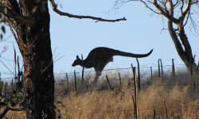

What
We're coming together for a fourth Double Fine fan meetup at PAX Australia (you can find details on past meetups here, here and here). If you're not attending PAX, don't worry - you can still come!

Hang out with other local Double Fine fans and chat with Cheese about his work on Day of the Tentacle Remastered!
Where
This year, we'll be meeting at the Melbourne Convention & Exhibition Centre (bigger map), along the north east side of the Convention Centre - just past the stairs on the right as you enter from the Exhibition Centre concourse.


The MCEC is open to the public, so if you're not attending PAX, you can still come along!
When
Keep an eye to the countdown timer at the top of the page, make a reminder, set an alarm, write it on your forehead so you don't forget!
1:00pm on Saturday the 5th of November 2016!

For PAX Australia attendees, details of the PAX Australia events which might conflict with the Double Fine Down Under BBQ can be found on the PAX schedule for Saturday.
Woo?
We'll have a whole bunch of Psychonauts and Brütal Legend Pinny Arcade badges. Be sure to grab one!

In the leadup to the meetup, feel free to say hi/make plans/become friends in this thread on the Double Fine forums.
Why
It's not often that an international pop culture/gaming event happens in Australia that brings people together the way that PAX does. This is a great time for fans and communities to come together to meet new friends and celebrate the things they love.
With Double Fine not able to attend, setting a time and place to gather is the best way to bring local DF fans and PAX attendees from afar together.
Who

This gathering has been coordinated by Australian Double Fine community members, but people from DF (most notably James Spafford) have been super supportive.
If you come along, you'll get to meet:

- Cheese - Double Fine community guy and Linux developer on Day of the Tentacle Remastered, keep an eye out for his antennae!
- Less wildlife than images on this page seem to suggest!
- And a whole bunch of super awesome Aussie DF fans!